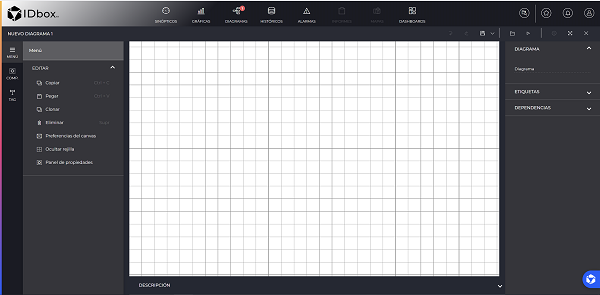
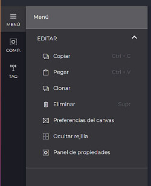
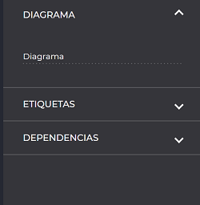
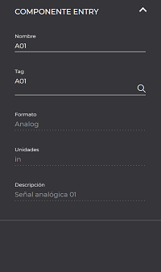
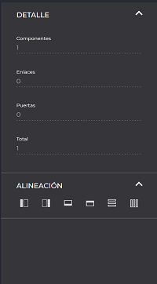
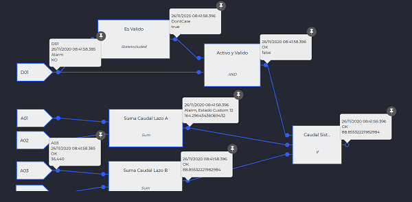
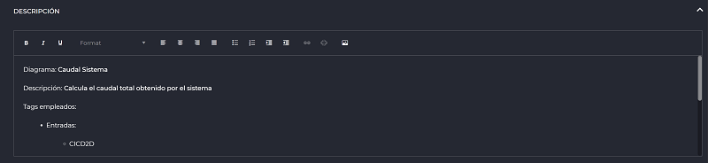

DIAGRAMS
- Introduction
- 1.1 Editing the calculation
- 1.1.1 Actions and preferences
- 1.1.2 Signals
- 1.1.3 Diagram
- 1.1.4 Signal properties
- 1.1.5 Multiple selection
- 1.2 Components
- 1.3 Reproduction
- 1.4 Calculation documentation
- 1.1 Editing the calculation
1. Introduction
The main calculation module that integrates the tool to execute logical evaluations and generate new signals within the system, is Business Process Management (BPM) diagrams or calculations. The tool allows, from one or multiple input signals, to process certain logic components or actions, in order to generate a new output signal that will be part of the system and on which the relevant analysis can be applied.
New diagrams can be created from the shortcut section of the Web client.

1.1 Edition
One of the main features provided by the module is the ability to edit online a calculation from the Web client itself. A list of features is provided in order to be able to design with a traditional editor our calculations and to be able to subsequently execute them within an IDbox instance.
The execution of the calculation will require the intervention of an administrator once it has been properly designed.
1.1.1 Actions and preferences
From the Menu section, located on the left side (collapsible), the traditional actions for editing a diagram are provided:

- Copy: Possibility of copying (keyboard combination CTRL+C) elements.
- Paste: Action of pasting those elements previously copied (CTRL+V).
- Clone: Ability to clone elements previously designed and configured on the diagram screen.
- Delete: Ability to delete elements with a delete action (Delete key).
- Canvas preferences: Size characteristics, background color and content settings of the diagram wallpaper.
- Hide grid: Action that allows to disable the orientation lines on the tapestry in case they are not needed.
- Properties panel: General properties of the diagram.
1.1.2 Signals
From the left side menu, there is the action of adding signals to the tapestry by simply dragging the icon onto the diagram tapestry, which will then open a context menu with the list of signals available in the system.
From this system menu you can select one or multiple signals that will be translated into the input signals of the calculation.
By dragging the mouse wheel you can move around the diagram, as well as by pressing the CTRL key you can increase or decrease the detail.
1.1.3 Diagram
This feature is found by selecting the diagram’s tapestry and in the right side menu, which is the region where individual information is displayed according to the selected element. The diagram configuration allows accessing the main configuration details such as the current name of the diagram (empty if we are editing a new diagram), labels and their dependencies.

1.1.3.1 Tags
Listing of all the main input gates of the calculation (intervening signals) as well as the outputs (resulting signals).
1.1.3.2 Units
This section lists all those dependencies with other diagrams according to calculation aliases that allow the reuse of evaluation routines, as well as small actions or logical operations that are deduced in other external and therefore related diagrams.
1.1.4 Signal properties
When a signal is selected on the canvas, its information is displayed: name of the selected signal, format (analog, digital or discrete), units and description.

1.1.5 Multiple selection
When more than one element is selected on a diagram tapestry, an information panel with statistics on the number of components, links, gates and totals is displayed on the right.
In addition, it is possible to align the selection in several positions.

1.2 Components
List of all those elements necessary to be able to design the logical evaluations required within a calculation.
They are selected from the left side menu and clicking on the icon that will show all those elements organized by type and detailed in the following list below.
The possibility of filtering items by component type is allowed from a search engine in the top header of the menu that will filter as you type. At the bottom, a small information legend is displayed that briefly describes the selected item.
To add an element on the wallpaper, it will only be necessary to deploy the appropriate grouping and select the component, dragging it on the current wallpaper to subsequently start hooking its input gates and enabling the relevant output ones.
The information corresponding to the component can also be consulted by selecting it and it will be displayed on the lower panel of the left panel.
 .
.
There is the possibility of enlarging the size of the component on the tapestry by dragging the lower right corner and enlarging it as required.
1.2.1 Features
Once a particular component is selected, all the main characteristics of the element are listed from the right side menu of the editor:
- Name
- Type
- Ports
- Parameters
One of the main editing features of a component is the configuration of its gates (the entry or exit points in an execution flow).
Clicking on the "Edit gates " button opens a new window where the following are displayed:
-
Gates of entry: These are those entry points of the execution flow on a component. You can enter a description, choose a role among the possible ones (depending on the type of component), change its visibility, see if it has any link, add or delete signals.
-
Exit gates: The exit point(s) in a process. It has the same characteristics as the input gates, but you can also assign an “alias” or associate an output signal to link the calculation with. A signal and an alias cannot be selected simultaneously for the same gate. This signal will be the new calculated signal that sets up the calculation diagram.
A rol is the type of behavior the gate exhibits (input, output or according to its type), while an alias represents an intermediate computation name that can be shared in other computations as partial evaluations of a larger computation.

From the bottom parameters section of the component configuration menu, all those affecting the selected component and varying according to its type or behavior are assigned.
1.2.2 Tipos
A continuación se detallan a grandes rasgos los principales componentes que proporciona el editor online y que se encuentran en constante evolución o disponibilidad según el tipo de instalación que se configure.
The following list may be subject to change from time to time:
1.2.2.1 Entrance
Group of components that only present output gates as input flow in a calculation. E.g. FTP Driver, Simulator, etc.
1.2.2.2 Senders
Group of components that only present a single gateway as the final flow in a calculation. For example, SMS, Mail, Post, etc.
1.2.2.3 Constants
All those components that set a constant as part of the calculation and by nature only have output gates. This type of component sets a permanent value that is triggered with a constant frequency.
1.2.2.4 Converters
Components that convert a group of inputs into a given output and are grouped according to temperature, time or type.
1.2.2.5 Functions
Component groups related to the evaluation of internal functions within a calculation that accept multiple inputs and a single output.
1.2.2.6 Filters
List of components that act as filters evaluating states, changing values or applying masks on states of a sample.
1.2.2.7 Operators
Group of main logical operators to set up a calculation and which are broken down into the following:
- Arithmetic: multiplications, additions, subtractions, divisions, logarithms, percentages, etc.
- Logical: Logical types such as AND, OR, NOR, NOT, NAND, etc.
- Relational: Comparisons, greater than, less than, different, etc.
- Trigonometric: Tangents, cosines, sines, arc tangent, hyperbolic tangent, etc.
- Counters: State counts, values, totals, logical, pulses, etc.
- Statistics: Statistical summaries of analog, digital, discrete, conditional types.
1.2.2.8 Validation
Components that check states or ranges according to a set of inputs or outputs.
1.2.2.9 Timers
Main components for marking an execution frequency or activating a time condition within a calculation diagram.
1.2.2.10 Flow
Main components of a calculation execution flow such as conditions, selective steps (switch), valves, etc.
1.2.2.11 Others
Groups of extra components that may vary according to the type of installation or third party implementations.
1.2 Reproduction
To view or reproduce a calculation online, it will be necessary to select a diagram type document from the system explorer and directly open the document in view mode. Here you can zoom with the mouse and move the diagram by dragging it.
It is also possible to edit a document and progressively check the changes using the top play button in the header.
To check the real time of the diagram or to debug the execution flow of the diagram, it is as simple as hovering the mouse pointer over the desired gate (circles). If we want to display the messages with the information associated to a component (rectangle), we will pass the mouse pointer over the corresponding component.
Both pop-up messages, those concerning doors and components, can be pinned by clicking on the pushpin in the upper right corner.

1.3 Calculation documentation
It can be displayed by simply clicking on the description title in the toolbar or by clicking directly on the collapsed panel at the bottom right (arrow icon). When displayed, it shows the documentation corresponding to the calculation and an embedded editor to conform the detail. The editor can be enlarged to full screen by clicking on the icon for more comfort, both viewing and editing.
